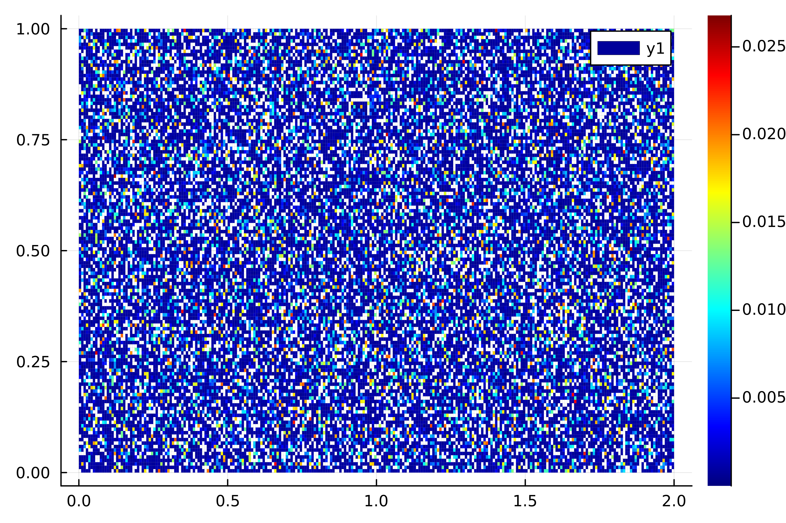
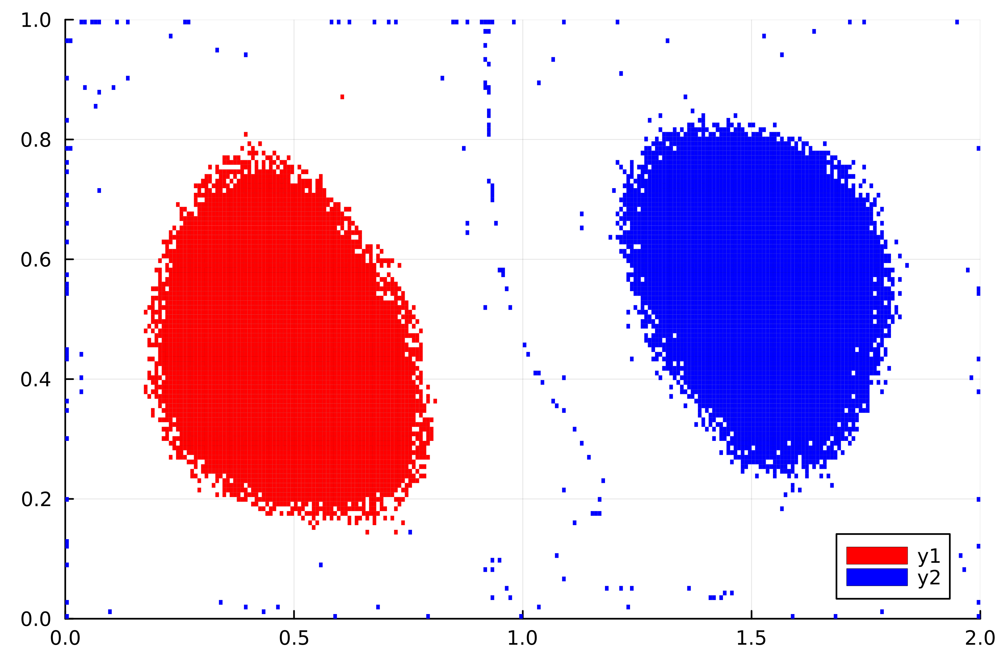

Sparse Eigenbasis Approximation (SEBA)
Mathematical Background
A common use pattern in GAIO.jl is to construct the transfer operator (or related operators), and then investigate the eigenfunctions for some specific structure. This may be e.g. partitioning the state space based on the result of the second leading eigenvector to find almost invariant sets. A common approach is to use $k$-means, though this may not be entirely sufficient. The method of Froyland et. al. [10] attempts to find a sparse basis that approximately spans the one produced by a set of eigenvalues.
More specifically: denote some eigenvalues $\lambda_1 \geq \ldots \geq \lambda_r$ and corresponding eigenvectors $v_1, \ldots, v_r \in \mathbb{R}^d$ (typically $r \ll p$) of a data matrix. We write $V = [v_1 \vert \ldots \vert v_r]$. In the context of GAIO.jl this matrix may be the discretized transfer operator. The eigenvectors span a basis $\mathcal{V} \subset \mathbb{R}^p$. We wish to transform this basis into a basis of sparse vectors $s_1, \ldots, s_r \in \mathbb{R}^p$ that span a subspace $\mathcal{S} \approx \mathcal{V}$. Mathematically, this can be formulated as solving the optimization problem
\[\underset{S, R}{\mathrm{arg\,min}}\ \frac{1}{2} \| V - S R \|_F^2 + \mu \| S \|_{1,1}\]
where $S \in \mathbb{R}^{n \times p}$ has $\ell_2$ norm in each column, $R \in \mathbb{R}^{r \times r}$ is orthogonal, and $\mu > 0$ is a penalty term. $\| \cdot \|_F$ denotes the Frobenius norm and $\| \cdot \|_{1,1}$ the element sum norm.
Solving this problem for $S = [s_1 \vert \ldots \vert s_r]$ is done by the SEBA algorithm [1], (which is based on sparse principal component analysis by rotation and truncation - SPCArt [11]). At this point, most of the work is finished. Indeed, one may be satisfied with the sparse basis alone. However, recall that the goal is to partition the state space into sets based on the eigenvalues. Hence the final step is to threshhold the sparse vectors to fix which indices are in or out of a feature, that is, find an appropriate $\tau$ and set S[S .≤ τ] .= 0 such that the least infomation is lost. For this, three heuristics are offered by GAIO.jl:
- Maximum likelihood partition (without threshholding): For each feature (each row) $i$, set $S_{ij} = 0$ for all $j$ except $j_0 = \underset{j}{\mathrm{arg\,min}}\ S_{ij}$.
- Hard partition: For each feature (each row) $i$, write the values $s_{i1}, \ldots, s_{ir}$ of $S_{i\cdot}$ in decreasing order. Choose the threshhold $\tau^{dp} = \underset{1 \leq i \leq p}{\mathrm{max}}\ s_{i2}$, i.e. the maximum over the second largest element of each row. Set
S[S .≤ τ] .= 0. - Partition of unity: For each feature (each row) $i$, write the values $s_{i1}, \ldots, s_{ir}$ of $S_{i\cdot}$ in decreasing order. Choose the threshhold $\tau^{pu} = \underset{1 \leq i \leq p,\ 1 \leq j \leq r}{\mathrm{max}} \left\{ s_{ij} \vert \sum_{k=1}^j s_{ik} > 1 \right\}$, i.e. the minimum threshhold such that all rows sum to less than $1$. Set
S[S .≤ τ] .= 0.
Note that the final heuristic does not return a strict partition of the features, but rather a partition of unity.
By default when calling GAIO.jl's seba, hard partitioning is performed.
Example
We will continue using the periodically driven double-gyre introduced in the section on Almost Invariant (metastable) Sets. See that code block for the definition of the map.
t₀, τ, steps = 0, 0.1, 20
t₁ = t₀ + τ * steps
Tspan = t₁ - t₀
Φₜ₀ᵗ¹(z) = Φ(z, t₀, τ, steps)
domain = Box((1.0, 0.5), (1.0, 0.5))
P = BoxGrid(domain, (256, 128))
S = cover(P, :)
F = BoxMap(:montecarlo, Φₜ₀ᵗ¹, domain, n_points=32)
T = TransferOperator(F, S, S)
# we give Arpack some help converging to the eigenvalues,
# see the Arpack docs for explanations of keywords
tol, maxiter, v0 = eps()^(1/4), 1000, ones(size(T, 2))
λ, ev = eigs(T; nev=2, which=:LR, maxiter=maxiter, tol=tol, v0=v0)
μ = abs ∘ ev[2]BoxMeasure in 256 x 128 - element BoxGrid with 32768 boxes in its suportusing Plots
p = plot(μ, colormap=:jet);
We notice there are two "blobs" defining the second eigenmeasure. These correspond to the almost invariant sets; there are two "vortices" where mass flows in a circular pattern and doesn't mix with the rest of the domain. We wish to isolate these blobs using seba
# seba expects real numbers, ev is complex, so we grab the real components.
# We also potentially have to scale by -1, this depends on what Arpack
# returns so always try both
re_ev = real .∘ (-1 .* ev)
ev_seba, feature_vec = seba(re_ev, which=partition_unity)
μ1, μ2 = ev_seba[1], ev_seba[2]
S1 = BoxSet(P, Set(key for key in keys(μ1) if μ1[key] > 0.01))
S2 = BoxSet(P, Set(key for key in keys(μ2) if μ2[key] > 0.01))
p = plot(S1, xlims=(0,2), ylims=(0,1), color=:red);
p = plot!(p, S2, color=:blue);
GAIO.seba — Functionseba(V::Vector{<:BoxMeasure}, Rinit=nothing; which=partition_disjoint, maxiter=5000) -> S, AConstruct a sparse eigenbasis approximation of V, as described in [1]. Returns an Array of BoxMeasures corresponding to the eigenbasis, as well as a maximum-likelihood BoxMeasure that maps a box to the element of S which has the largest value over the support.
The keyword which is used to set the threshholding heuristic, which is used to extract a partition of the supports from the sparse basis. Builtin options are
partition_unity, partition_disjoint, partition_likelihoodwhich are all exported functions.
seba(V::Matrix{<:Real}, Rinit=nothing, maxiter=5000) -> S, RConstruct a sparse approximation of the basis V, as described in [1]. Returns matrices $S$, $R$ such that
\[\frac{1}{2} \| V - SR \|_F^2 + \mu \| S \|_{1,1}\]
is minimized, where $\mu \in \mathbb{R}$, $\| \cdot \|_F$ is the Frobenuius-norm, and $\| \cdot \|_{1,1}$ is the element sum norm, and $R$ is orthogonal. See [1] for further information on the argument Rinit, as well as a description of the algorithm.
[1] Gary Froyland, Christopher P. Rock, and Konstantinos Sakellariou. Sparse eigenbasis approximation: multiple feature extraction across spatiotemporal scales with application to coherent set identification. Communications in Nonlinear Science and Numerical Simulation, 77:81-107, 2019. https://arxiv.org/abs/1812.02787